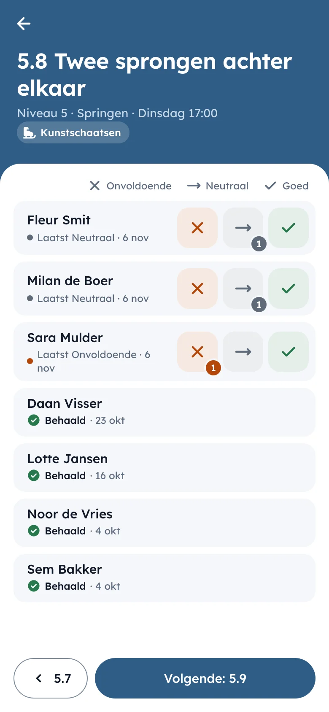
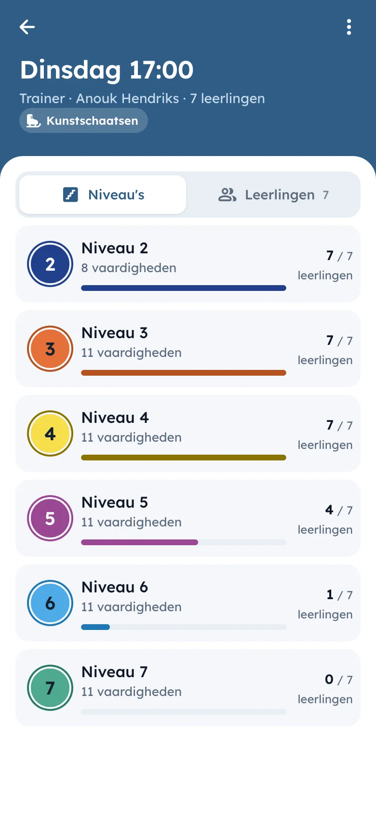
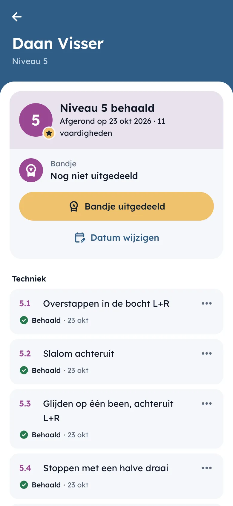
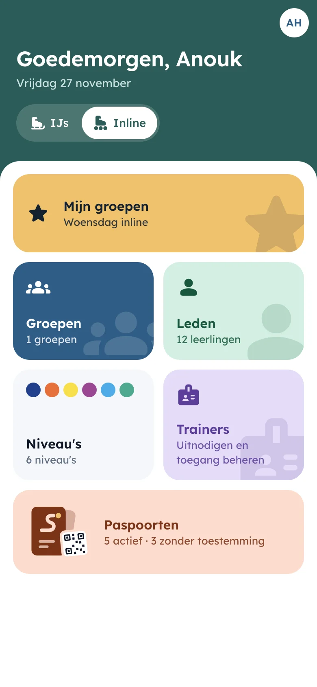
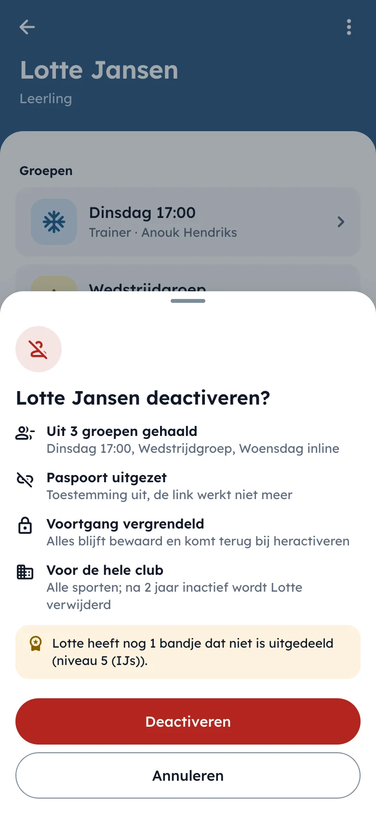
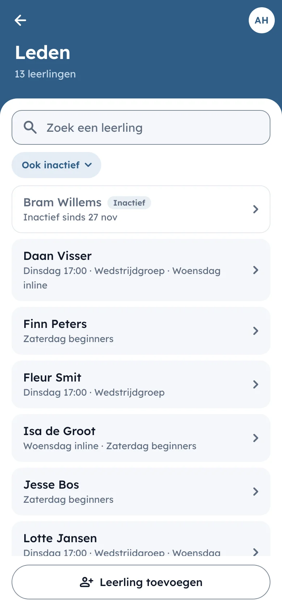
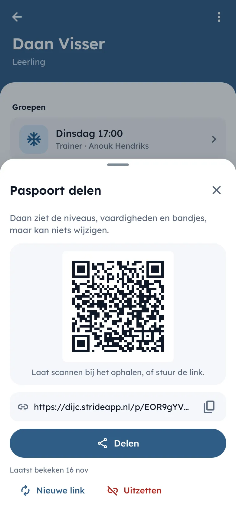

In één oogopslag
Wat Stride kan
-
Beoordelen in één tik
Goed, neutraal of onvoldoende. Direct opgeslagen, zo terug te draaien.
-
Eigen niveaus
De club bepaalt de niveaus, de vaardigheden en wanneer een niveau gehaald is.
-
Meerdere sporten Nieuw
Elke sport eigen niveaus en groepen. Eén leerling, alle sporten.
-
Paspoort voor leerlingen
Op de eigen telefoon zien wat al goed gaat. Geen account nodig.
-
Diploma of bandje
Leg vast wanneer een diploma, bandje of insigne is uitgereikt.
-
Leerling deactiveren Nieuw
Gestopt? Uit de groepen, paspoort uit, voortgang bewaard.
-
Geen wachtwoord
Inloggen met je e-mailadres en een code. Beheerders nodigen trainers uit.
-
Werkt in de browser
Op elke telefoon, zonder installatie. Met één hand te bedienen.
In 24 seconden
Zo werkt Stride
Beoordelen tijdens de les, paspoort delen, en de leerling ziet wat al goed gaat.
Voor trainers
Beoordelen tijdens de les
- Kies een vaardigheid en beoordeel de hele groep onder elkaar.
- Of loop alle vaardigheden van één leerling door.
- Zie per groep hoe ver iedereen is.
- Niveau gehaald? Leg ook de uitreiking vast.




Voor clubbeheerders
De club op orde
- Meerdere sporten, elk met eigen niveaus en groepen. Nieuw
- Leerling gestopt? Deactiveren haalt de leerling uit de groepen en zet het paspoort uit. De voortgang blijft bewaard. Nieuw
- Trainers uitnodigen en bepalen wie wat mag.
- Toestemming voor paspoorten op één plek.
- Correcties: een beoordeling wissen of een datum aanpassen.




Voor leerlingen en ouders
Een paspoort om mee te kijken
- Op de eigen telefoon, zonder account.
- Zie aan welk niveau je werkt en wat al goed gaat.
- Alle sporten in één paspoort.
- Alleen de voornaam, geen cijfers.
- Pas te delen na toestemming. De link is altijd uit te zetten.


In gebruik
Ontstaan op het ijs
DIJC
Kunstschaatsen · Inline skaten
Stride is ontstaan bij kunstschaatsclub DIJC, waar trainers er wekelijks mee werken, op het ijs en op inline skates. Iedere club krijgt een eigen adres, eigen sporten en eigen niveaus: van zwemles tot turnen of judo.
Past Stride bij jouw club?
Stuur ons een mail over je club en hoe jullie nu met niveaus werken. We laten graag zien hoe Stride werkt.
Mail ons